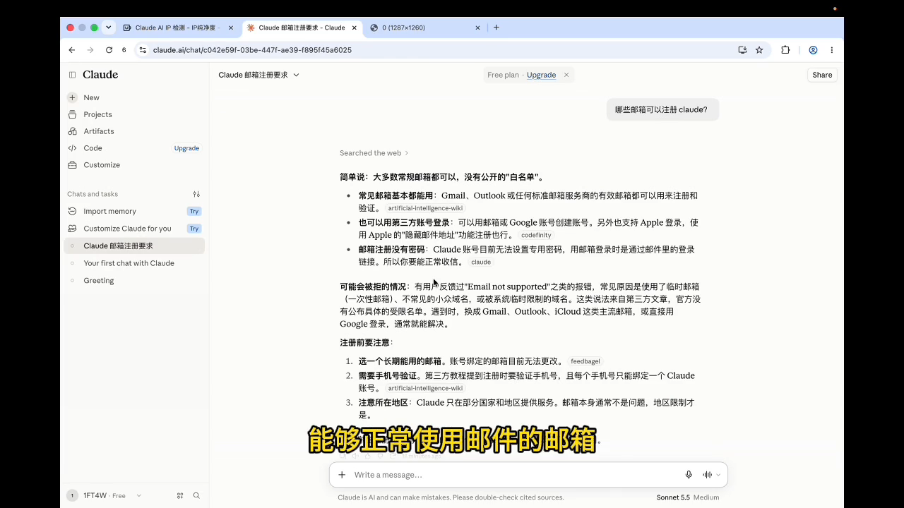

CLAUDE 使用手册 / 开始前准备开始前，先准备好邮箱
这一节先确认你有自己能够正常使用的邮箱。
取材范围：原视频 00:00—01:00；约 00:38 开始进入准备环节。
先看这一分钟视频
点击播放即可观看，无需下载。当前仅用于测试播放和图文呈现。
单独打开视频 →
01 准备自己能够正常使用的邮箱
开始前，先确认你能进入自己的邮箱，并正常查看收到的邮件。
视频在 00:38—00:46 提出准备邮箱，并举了 Google 邮箱和微软邮箱两个例子。
完成标准
你已经选好准备使用的邮箱，并能正常进入收件箱。

原视频 00:42 · 点击图片放大。画面正文为 AI 对话，不作为官方规则依据；本节仅提取邮箱准备项。02 提到了验证，尚未演示处理步骤
视频在 00:52—01:00 提到了手机号验证提示。首分钟到这里结束，没有展示实际验证页面，也没有给出完整处理流程。
如果你正在找验证问题的处理方法，这份一分钟样稿暂时不包含答案，不据此判断账号状态。
看完这一节，你应完成什么？
✓ 选好准备使用的邮箱。
✓ 确认自己可以进入该邮箱并查看邮件。
常见问题
这段已经教完 Claude 注册了吗？
没有。这一分钟主要是开场和邮箱准备，实际注册操作还未展示。
邮箱限制和验证提示，能直接当成规则吗？
暂不能。相关判断需要另行核实；本样稿不把这些说法写成确定结论。